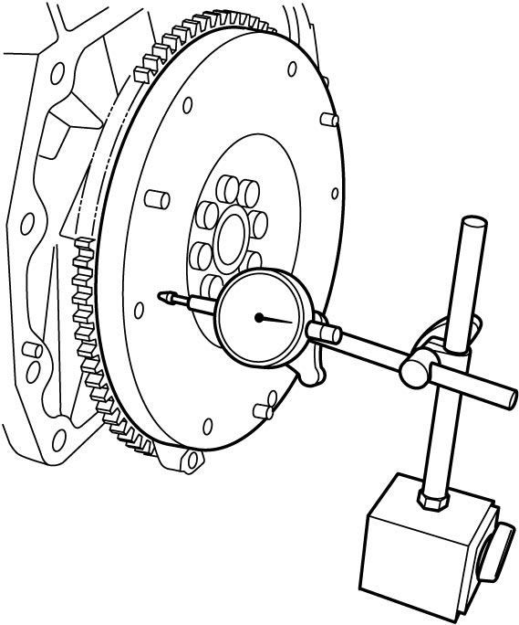

1D
| Flywheel / Drive Plate Inspection |
Visual Inspection
•If ring gear is damaged, cracked or worn, replace flywheel (M/T model) or drive plate (A/T model).
•If the surface contacting clutch disc is damaged or excessively worn, replace flywheel (M/T model).
•If the surface contacting clutch disc is damaged or excessively worn, replace flywheel (M/T model).
Flywheel / Drive Plate Face Runout
Check flywheel (M/T model) or drive plate (A/T model) face runout with a dial gauge.
If runout exceeds its limit, replace flywheel or drive plate.
Flywheel or drive plate face runout
Limit: 0.2 mm (0.0079 in.)

 "Expand image")